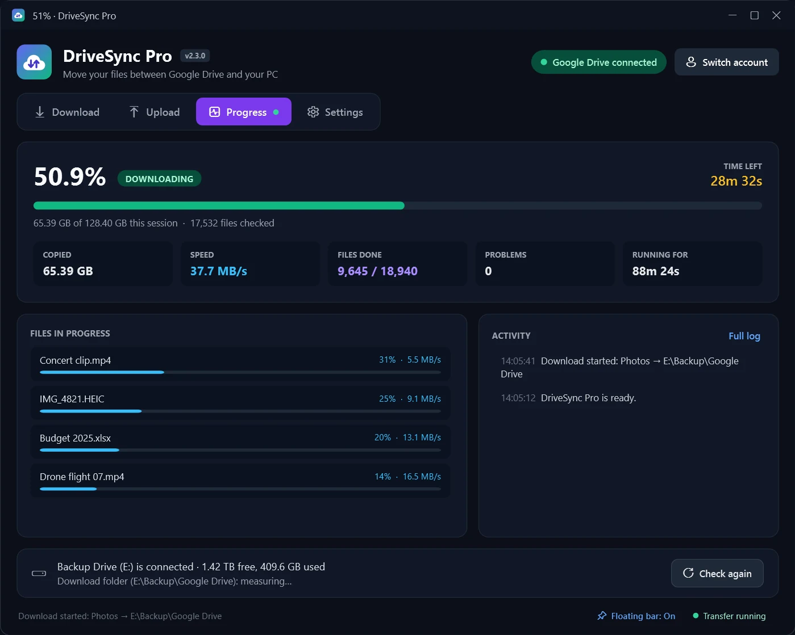
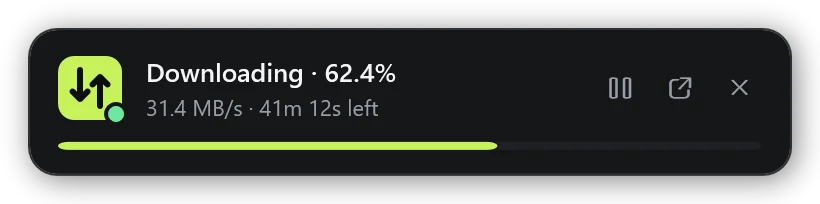
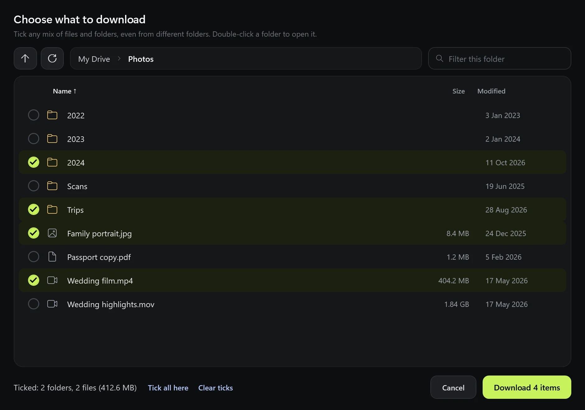
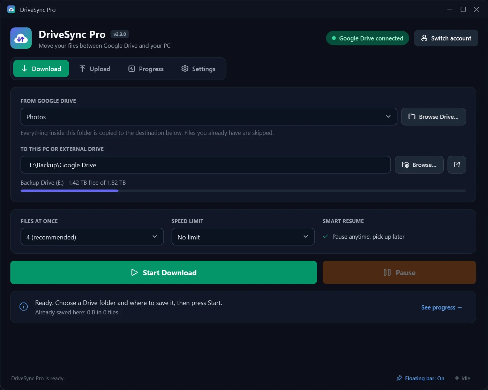
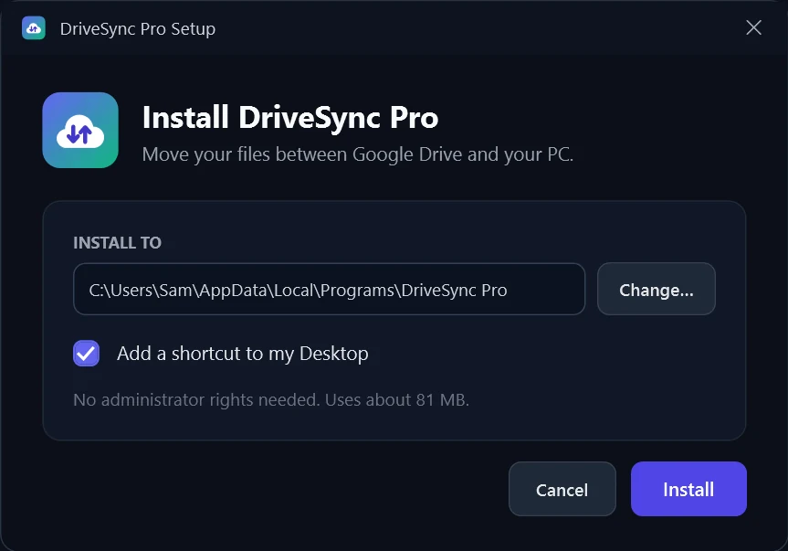

Your Google Drive, on your own disk.
DriveSync Pro copies your whole Drive, any folder, or just the files you tick, to your PC or an external drive, and uploads back. Already downloaded half of it? It sees what's there and only fetches the rest.
- One-click install, no admin rights
- Never deletes anything
- Your files never touch our servers


Pick like in Drive
Open folders, tick files and sub-folders, mix and match.
Finish what you started
Point it at a half-done download. It only gets what's missing.
See the whole picture
Files, folders and storage: total, already there, and done.
Features
Made for big moves you don't want to babysit
A Drive can hold hundreds of gigabytes. DriveSync Pro runs for hours, survives interruptions, and tells you exactly where things stand.
Pick exactly what you want
Browse your Drive the way you do on the web. Open folders, go into sub-folders, and tick any mix of folders and single files. Uploads work the same way, from your PC.
- Ticks stay put while you move between folders
- Sizes, dates, sorting and a quick filter in every folder
- Folder structure is kept exactly as it is on Drive

Already downloaded part of it? It knows.
Started in a browser, with another tool, or on another day? Choose the same folder on your PC. DriveSync Pro compares both sides, counts what you already have and downloads only the rest. Press Check what's missing to see the numbers before you start.
- Pause anytime; finished files are always kept
- Works the other way too: uploads skip what's already on Drive
- Clear messages when a drive is missing or something goes wrong

Keep an eye on it from any app
While a transfer runs and you're working in something else, a small progress bar floats on top of your other windows. It disappears when DriveSync Pro is in front.
- Pause, resume or open the app right from the bar
- Drag it anywhere; it remembers where you put it
- Progress also shows on the taskbar icon
Upload to Drive
Tick folders and files on your PC or external drive and send them to any Drive folder. Every file is checked after upload.
Google Docs become Office files
Docs, Sheets and Slides download as .docx, .xlsx and .pptx, so they open anywhere.
Private by design
Runs entirely on your PC. Your files and sign-in go only between your computer and Google.
Speed you control
Go full speed overnight, or set a limit so your internet stays usable during the day.
Works with external drives
Shows when your disk is connected and how much space is left, and warns you before it fills up.
Fast and light
A native Windows app that stays responsive while it moves terabytes in the background.
How it works
Set up in about a minute
Install
Download DriveSyncPro-Setup.exe, open it and click Install. It adds Start menu and Desktop shortcuts.
Connect Google Drive
Click Connect Google Drive and sign in with Google in your browser. You only do this once.
Tick what you want and press Start
Choose files and folders, pick where they go, and press Start. Watch it live, or let it run and check the floating bar.
Install help
Two warnings you might see, and why they're safe
DriveSync Pro is a small independent app, so Windows and Google don't recognise it yet. Here's what to click.
"Windows protected your PC"
Windows shows this for new apps without a paid publisher certificate. Click More info, then Run anyway.
"Google hasn't verified this app"
This appears when you connect your Drive, because the app hasn't been through Google's paid review. Click Advanced, then Go to DriveSync Pro, then Allow.
- Works on
- Windows 10 or 11 (64-bit)
- Needs
- A Google account and an internet connection
- Space
- About 85 MB for the app, plus room for your files
- Admin rights
- Not needed

FAQ
Questions people ask
Is DriveSync Pro free?
Yes. There's no account, subscription or trial. You only need your own Google account.
Can I download just a few files instead of a whole folder?
Yes. Click Choose files & folders, open any folder and tick the files and sub-folders you want, even from different places in your Drive. Uploads work the same way from your PC.
I already downloaded part of my Drive. Will it start over?
No. Choose the folder where those files already are. DriveSync Pro compares it with Drive and only downloads what's missing, even if you used a browser or another tool for the first part. Check what's missing shows you the numbers first.
Will it delete anything from my Google Drive?
No. Downloads copy files from Drive to your PC, and uploads copy files from your PC to Drive. Nothing is ever removed on either side.
What happens if my PC restarts or I unplug the drive halfway?
Everything that finished copying is kept. Press Start again and DriveSync Pro skips those files and continues. A file that was only partly copied starts again from the beginning.
What happens to Google Docs, Sheets and Slides?
They're saved as Word, Excel and PowerPoint files (.docx, .xlsx, .pptx). You can turn this off in Settings to skip them instead.
Is it safe to sign in with Google?
Yes. You sign in on Google's own page, and the sign-in is stored only on your PC. DriveSync Pro has no server, so nobody else sees your files. You can remove its access anytime at myaccount.google.com/permissions.
Does it work on Mac or Linux?
Not yet. DriveSync Pro is for Windows 10 and 11.
How do I uninstall it?
Open Windows Settings, go to Apps, find DriveSync Pro and click Uninstall. Files you downloaded or uploaded are never touched.
Bring your Drive home
Free for Windows 10 and 11. One file, one click to install.
Download DriveSync Pro